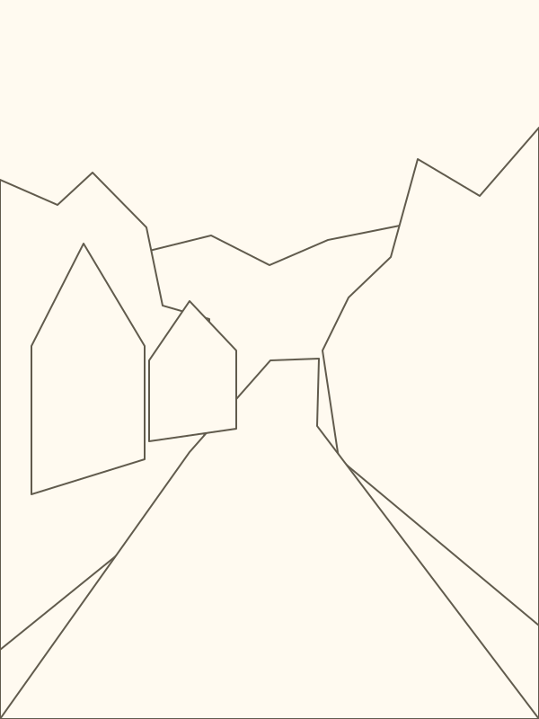

Original artwork by Vaughn Tucker.
Observation and Mood
Study the overall mood, large shapes, and the path of light before making marks.
Review Before Moving On
What did you notice?
Write what you are learning. These notes auto-save on this device.
Three Things to Learn from This Painting
Before detail, see the road, tree mass, sky, and houses as a few major shapes.
If the lights and darks work, the painting will read clearly even before rich color is added.
The same scene can feel bright, cool, warm, or quiet depending on color choices and brush handling.
Try Variations of the Same Scene
Push the road lights warmer, mute the greens slightly, and let the distance glow with orange-gold atmosphere.
Keep the shadows cooler and bluer, soften the distant hill, and let the light feel fresh and early.
Simplify the houses and trees into fewer strokes, then save your sharpest edges for the center of interest.
Classroom Checkpoint
Use this section when students are working independently. It gives a quick snapshot of progress, notes, and lesson completion.
Certificate of Lesson Completion
This certifies that the student completed the guided study:
Student Name
Guided lesson completed successfully
Jamaican Road Study — Automated Painting Lesson
Vaughn Tucker Art Academy